|
|
|
|
Documental "El provocador" Chacho (Pablo Navarro Espejo), luego de la experiencia TiT-SP en Brasil, volvió al país y en 1988 fundó Adoquín Video (más adelante llamado Adoquín Video Digital) junto a otros egresados de un seminario de video, entre ellos su compañera Silvia Maturana, para filmar documentales. Sin embargo su primera producción fue un corto artístico ideado y dirigido por Juan Uviedo, llamado "La eucaristía según Juan Uviedo". En 2006, durante una reunión entre Espejo, Silvia, Chiari, Raúl Zolezzi y Sergio Bellotti, surgió la idea de hacer una película sobre Juan. En 2008 comenzó a filmarse con la producción de Adoquín, el apoyo del INCAA y la colaboración en la dirección de Marcel Gonnet, y en 2009 un grupo viajó a Brasil para filmar a Juan en su entorno. 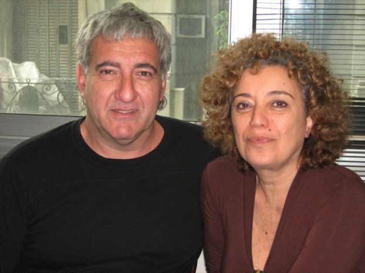 Pablo Navarro Espejo y Silvia Maturana, directores del documental. La película retrata a Juan como artista, provocador en el arte y en la vida, transgresor, solidario, chamán. También se explayó sobre uno de sus legados, el TiT en sus primeros años de vida. De los antiguos titeanos participaron Cthulhu, Raúl Zolezzi, Batata, Paula Caraballo, Marcela Pomerantz y Sergio Bellotti en Argentina; y Chiari, Gallego, Paula Caraballo y Pablo Niemtzoff (quien reside en el mismo municipio que Juan, Sao Thomé das letras), en Brasil. Link al trailer / Link a la película en Vimeo Imágenes del rodaje 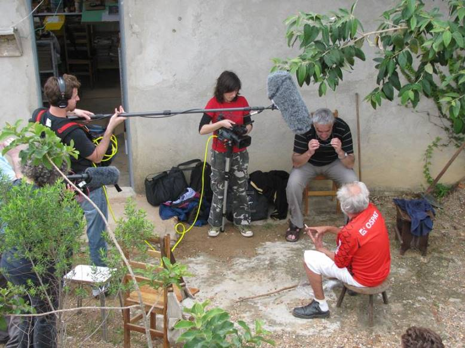 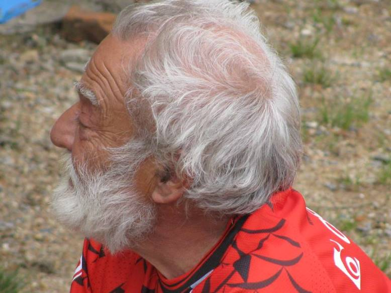 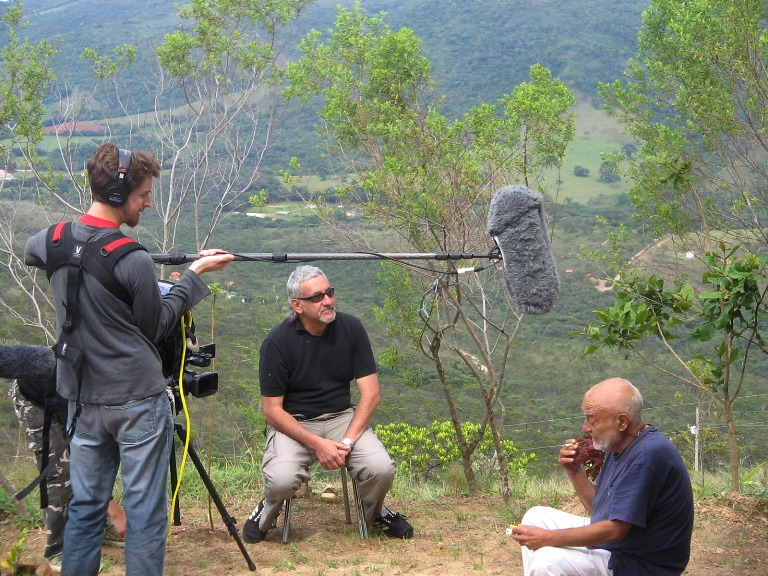 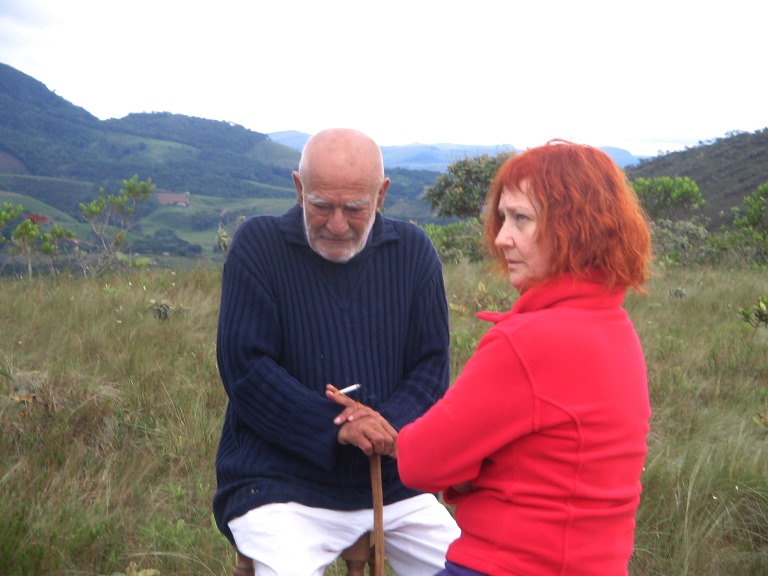 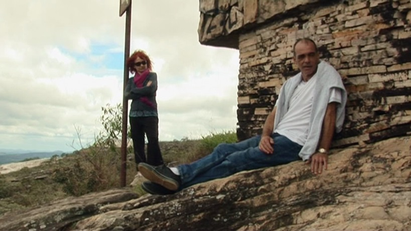 Gallego y Paula durante la filmación, afuera de la casa de Juan.
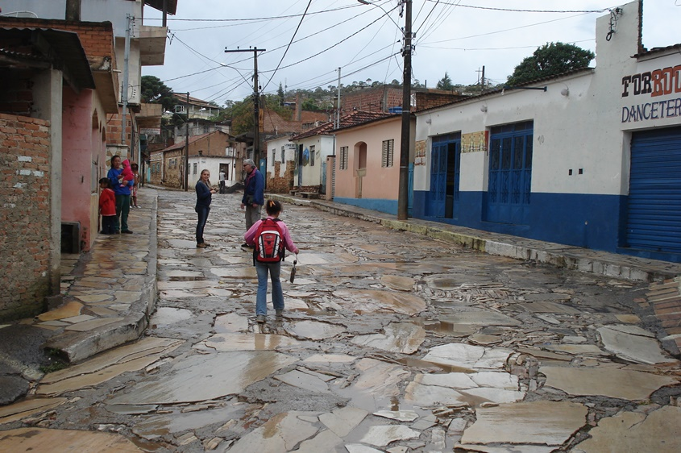 Pablo Espejo en una calle de Sao Thomé das letras.
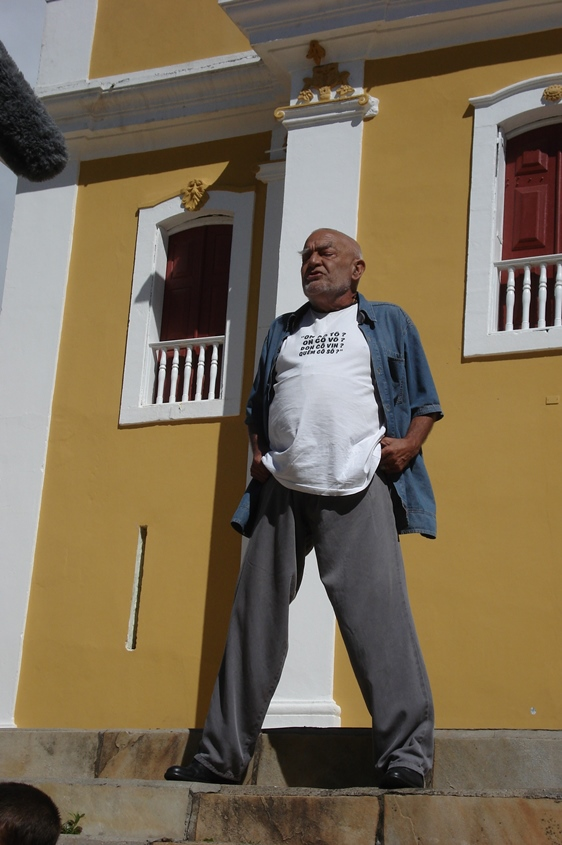 Juan filmando en la puerta de la iglesia del pueblo. 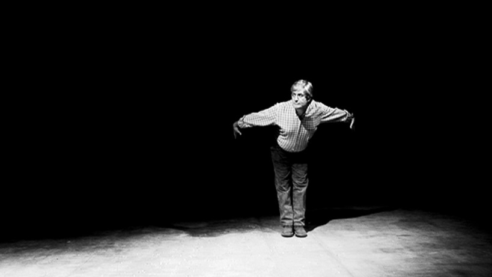 Cthulhu rememorando "Hombres pájaros" para el documental en una sala de Buenos Aires.
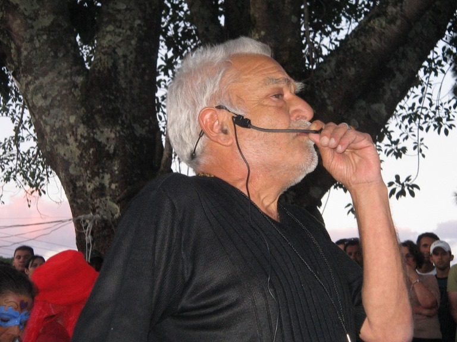 Juan dirigiendo el hecho teatral "Cámara maluca" (Cámara loca) actuado por gente del lugar. 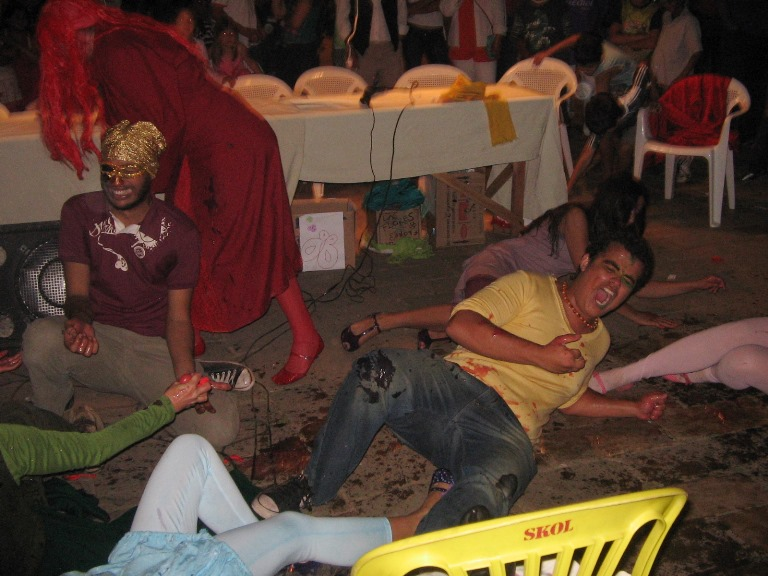 Un momento de "Cámara maluca". 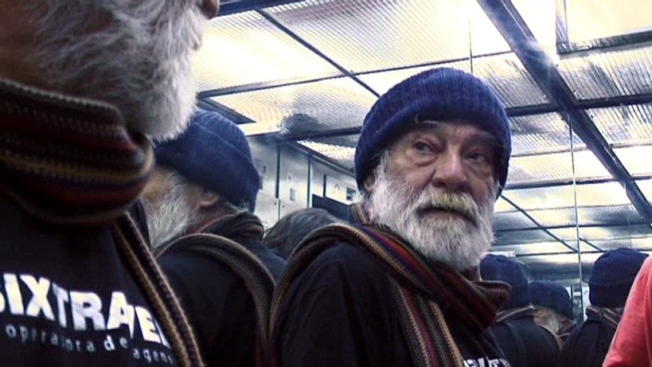 Juan en un hotel de San Pablo se apresta para una conferencia sobre su "cosmologia xamánica". 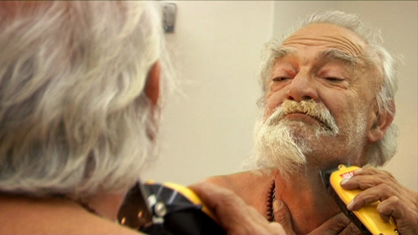 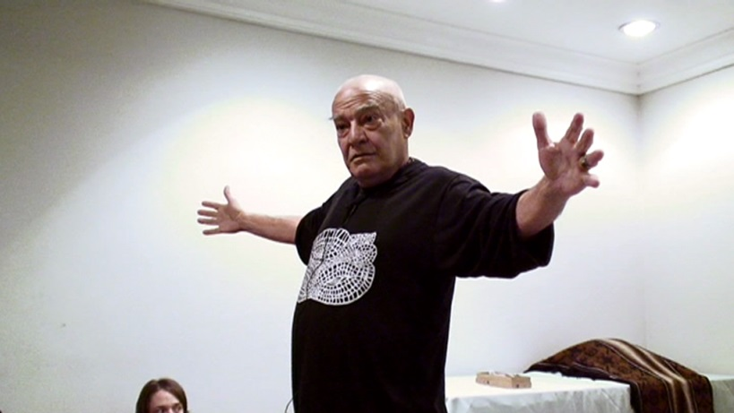 Juan como chamán.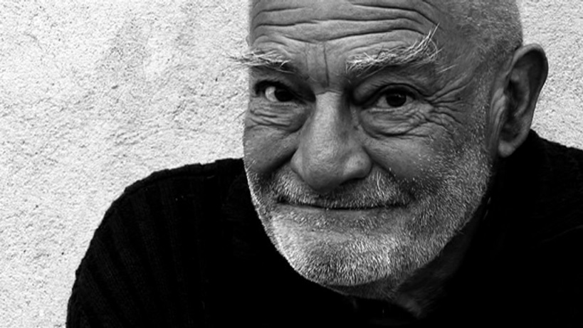
Otros documentales de Adoquín Video Digital Los más importantes de los últimos años son:
Su blog: http://adoquinvideodigital.blogspot.com.ar/
El estreno de "El provocador" en el Gaumont fue una oportunidad para el reencuentro de antiguos titeanos. 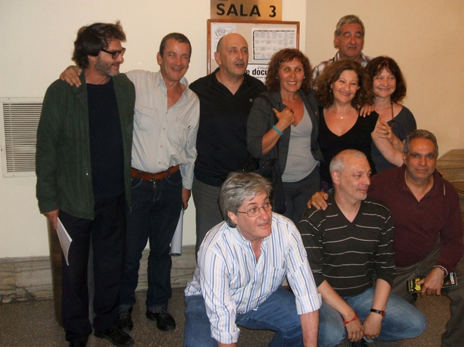 Sergio Bellotti, Pablo Niemtzoff, Chiari, Marcela, Irene, Espejo, Paula, Cthulhu, Raúl, Batata. 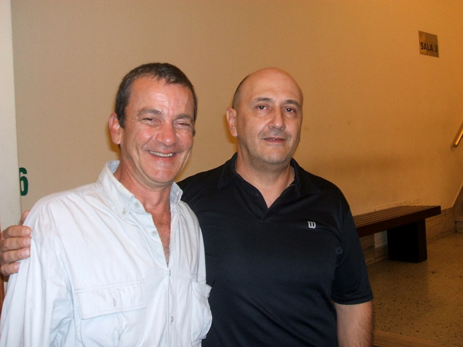 Pablo Niemtzoff y Chiari viajaron especialmente desde Brasil, donde residen. 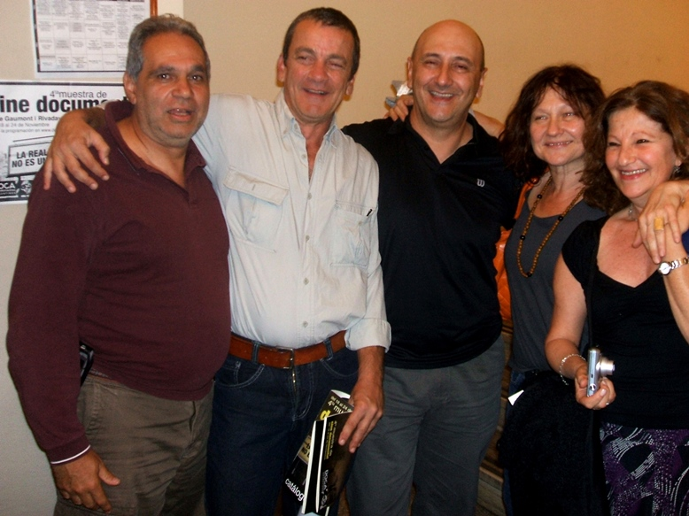 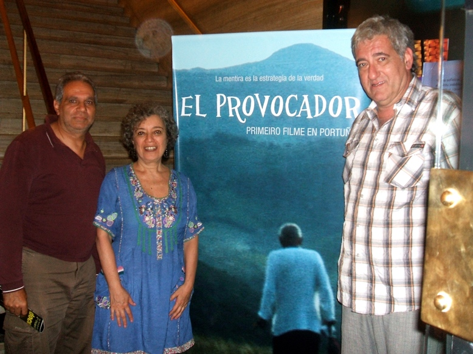 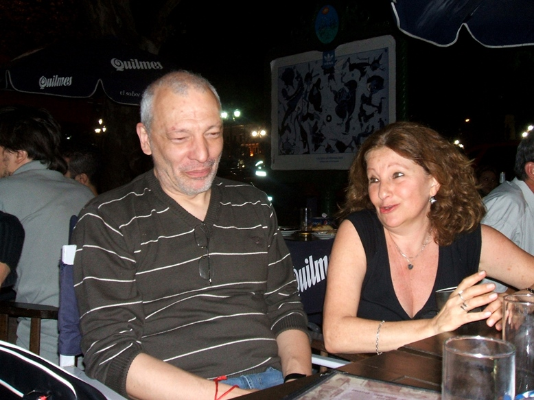 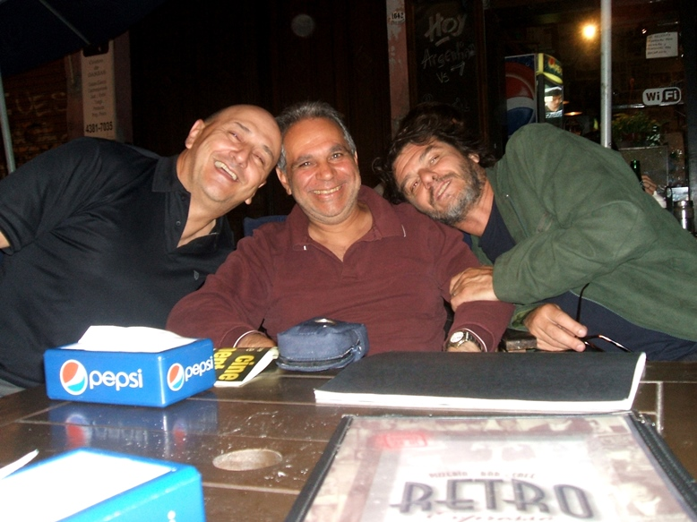
|